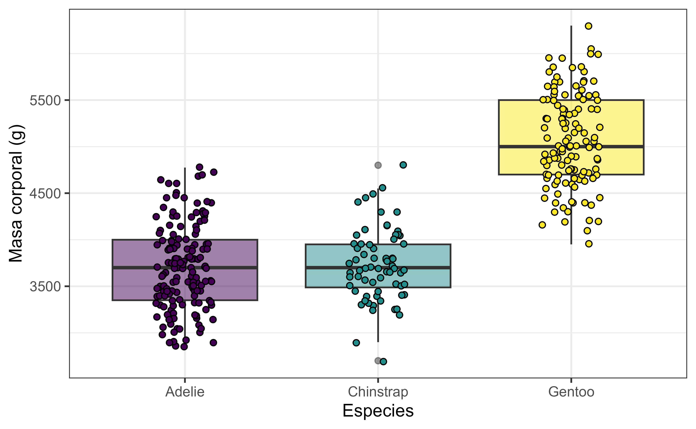
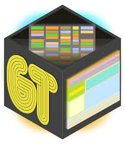

Sesión 4 - Publicando resultados con Quarto
Taller introductorio a R
2024-03-26
Recapitulando
- Sintaxis, tipos de datos y funciones
- Tidyverse y familia de paquetes
- Manipulación de datos ordenados con tidyverse
- Creación de gráficos en ggplot2
Sesión 3
De R al mundo
Todo bien con R pero…
¿Cómo sacamos las cosas desde R al mundo?
Opciones sencillas para tablas
Para exportar tablas usamos el paquete writexl
El paquete openxlsx también ofrece alternativas similares
Opciones sencillas para gráficos
Los gráficos se pueden exportar con la función ggsave()
Opciones sencillas para gráficos

Para guardar el gráfico debemos utilizar la función ggsave() junto con las especificaciones del formato (jpg, png, svg) y las dimensiones de tamaño.
Sin embargo, estas son formas útiles cuando queremos exportar algún objeto puntual. Si todo nuestro trabajo se realiza en R, es mejor buscar alternativas más integrales.
RMarkdown
- Herramienta de procesamiento de texto que integra código de R.
- Permite publicar documentos (html, pdf, docx) y presentaciones (html,ppt)
- Basado en el lenguaje de marcado Markdown para procesamiento de texto
- Exclusivo para R en Rstudio

Quarto
- Es la evolución de Rmarkdown, ya que integra mejores herramientas
- Ejecuta código de otros lenguajes como python, julia, entre otros.
- Corre en Rstudio, VS Code, NeoVIM, Jupyter Notebooks

Así se procesa un archivo .qmd de Quarto hacia su salida en el formato deseado
Markdown
Lenguaje de marcado que integra una codificación especial para dar formato de forma sencilla y directa.
Entrega las herramientas básicas para texto reproducible.
Usado por Rmarkdown y Quarto
Estilo
El texto básico se puede modificar con diferentes signos interpretables para un procesador de markdown
Mi **perrita** es muy *bonita*, es ***Alba***
potencia^2^ o subíndice~2~
~~texto tachado~~
`bloque de código`
Mi perrita es muy bonita, es Alba
potencia2 o subíndice2
texto tachado
bloque de código
Títulos
Los títulos tienen diferentes niveles que se identifican con #
# Título principal
## Título 2
### Título 3
#### Título 4
Listas
* lista no ordenada
+ sub-item 1
+ sub-item 2
- sub-sub-item 1
- lista no ordenada
- sub-item 1
- sub-item 2
- sub-sub-item 1
1. lista ordenada
2. item 2
i) sub-item 1
A. sub-sub-item 1
- lista ordenada
- item 2
- sub-item 1
- sub-sub-item 1
- sub-item 1
Enlaces e imágenes
[Enlace a Github](https://github.com/benjamin-adasme/Taller-R-marzo-24/)

Un logo
Usando Quarto
Estructura básica: YAML header
Define la configuración global del documento. Puede tener diferentes opciones dependiendo del tipo de doc. Ejemplo básico:
---
title: "Hello, Quarto"
format: html
editor: visual
---
Estructura básica: bloques de código
Son los espacios donde insertamos nuestro código. Quarto los diferencia del texto plano con los triple acentos
Estructura básica: markdown
El formato markdown está incorporado, pero se puede editar el texto en modo “source” o “visual”
Rstudio Projects
Para trabajar en Quarto lo más recomendado es usar Rstudio Projects, ya que nos ayudan a ordenar nuestros documentos y recursos necesarios.
- Carpeta madre (donde parte el proyecto)
- archivo qmd
- data (bases de datos)
- imagenes (a usar en el proyecto)
- salidas (para guardar outputs)
¡Vamos a R!
Extra: paquete gt
gt: great tables
gt es el paquete análogo a ggplot2, pero para tablas. Utiliza también una lógica de capas para producir diseños amigables y atractivos para visualizar datos tabulares.


Flujo de trabajo de gt
gt en funcionamiento
res_ping <- pinguinos %>%
filter(!is.na(sex)) %>%
group_by(species, sex) %>%
summarise(bill_length_mean = mean(bill_length_mm, na.rm = T),
bill_depth_mean = mean(bill_depth_mm, na.rm = T),
body_mass_mean = mean(body_mass_g, na.rm = T))
res_ping# A tibble: 6 × 5
# Groups: species [3]
species sex bill_length_mean bill_depth_mean body_mass_mean
<fct> <fct> <dbl> <dbl> <dbl>
1 Adelie female 37.3 17.6 3369.
2 Adelie male 40.4 19.1 4043.
3 Chinstrap female 46.6 17.6 3527.
4 Chinstrap male 51.1 19.3 3939.
5 Gentoo female 45.6 14.2 4680.
6 Gentoo male 49.5 15.7 5485.| sex | bill_length_mean | bill_depth_mean | body_mass_mean |
|---|---|---|---|
| Adelie | |||
| female | 37.25753 | 17.62192 | 3368.836 |
| male | 40.39041 | 19.07260 | 4043.493 |
| Chinstrap | |||
| female | 46.57353 | 17.58824 | 3527.206 |
| male | 51.09412 | 19.25294 | 3938.971 |
| Gentoo | |||
| female | 45.56379 | 14.23793 | 4679.741 |
| male | 49.47377 | 15.71803 | 5484.836 |
res_ping %>%
gt() %>%
fmt_number(where(is.numeric), use_seps = T, sep_mark = ".",
dec_mark = ",", decimals = 2) %>%
cols_label(5 ~ "Masa corporal (mm)")| sex | bill_length_mean | bill_depth_mean | Masa corporal (mm) |
|---|---|---|---|
| Adelie | |||
| female | 37,26 | 17,62 | 3.368,84 |
| male | 40,39 | 19,07 | 4.043,49 |
| Chinstrap | |||
| female | 46,57 | 17,59 | 3.527,21 |
| male | 51,09 | 19,25 | 3.938,97 |
| Gentoo | |||
| female | 45,56 | 14,24 | 4.679,74 |
| male | 49,47 | 15,72 | 5.484,84 |
res_ping %>%
gt() %>%
fmt_number(where(is.numeric), use_seps = T, sep_mark = ".",
dec_mark = ",", decimals = 2) %>%
cols_label(5 ~ "Masa corporal (mm)") %>%
data_color(columns = 5, direction = "column", method = "numeric",
palette = c("gray90", "steelblue")) %>%
tab_header(title = "Datos de los pingüinos del Arch. Palmer",
subtitle = "Desagregados por sexo y especie") %>%
tab_footnote(footnote = "Datos del paquete de R 'palmerpenguins'")Introducción a R y Rstudio
| Datos de los pingüinos del Arch. Palmer | |||
|---|---|---|---|
| Desagregados por sexo y especie | |||
| sex | bill_length_mean | bill_depth_mean | Masa corporal (mm) |
| Adelie | |||
| female | 37,26 | 17,62 | 3.368,84 |
| male | 40,39 | 19,07 | 4.043,49 |
| Chinstrap | |||
| female | 46,57 | 17,59 | 3.527,21 |
| male | 51,09 | 19,25 | 3.938,97 |
| Gentoo | |||
| female | 45,56 | 14,24 | 4.679,74 |
| male | 49,47 | 15,72 | 5.484,84 |
| Datos del paquete de R 'palmerpenguins' | |||